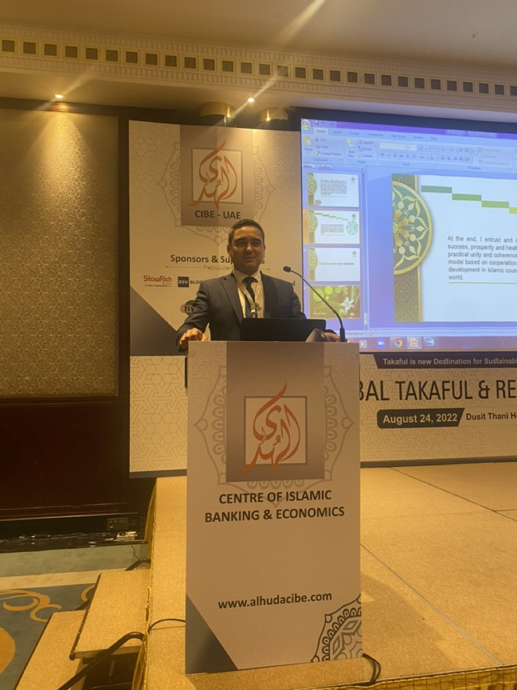

MFaktor Executive Club
Постоянный участник и спикер.
Эксперт в области страхования и финансов
Более 20 лет опыта в страховании и бизнесе. Пишу и выступаю о личном развитии, выборе профессии, финансах и исламских финансах.

Обо мне
Двадцать лет я работаю в страховании: от государственного надзора до руководства ведущими страховыми компаниями. Получил профессиональное образование в области страхования жизни в Японии.
Провожу мастер-классы для студентов и молодёжи, делюсь опытом как спикер в предпринимательских клубах. В своём Telegram-канале пишу о жизни, семье, ценности времени, отношениях и работе над собой.
Карьера
Профессиональная активность
Постоянный участник и спикер.
Председатель Совета директоров клуба предпринимателей и владельцев бизнеса.
Спикер.
Организатор. Среди гостей форума — Игорь Манн, Michael Bang и Jordan Belfort.
Выступления на международных конференциях и вебинарах о такафуле — страховании по нормам шариата.
Гость передачи на телеканале «Тошкент».




Мастер-классы
Мастер-класс для студентов университетов и учебных центров. Темы: цель и миссия, ценность времени, нетворкинг, личные финансы, нестандартное мышление, наставник и ученик, непрерывное обучение, лидерство.


Семя упало в землю — и стало цветком,
— Алишер Навои
Шелкопряд отдал жизнь — и стал шёлком.
Нет ли в тебе усердия тюльпанова семени?
Нет ли в тебе щедрости шелкопряда?
Новые статьи сначала выходят в Telegram-канале. Если хотите пригласить на выступление или мастер-класс — тоже пишите через канал.
@umidkhudayberdiev